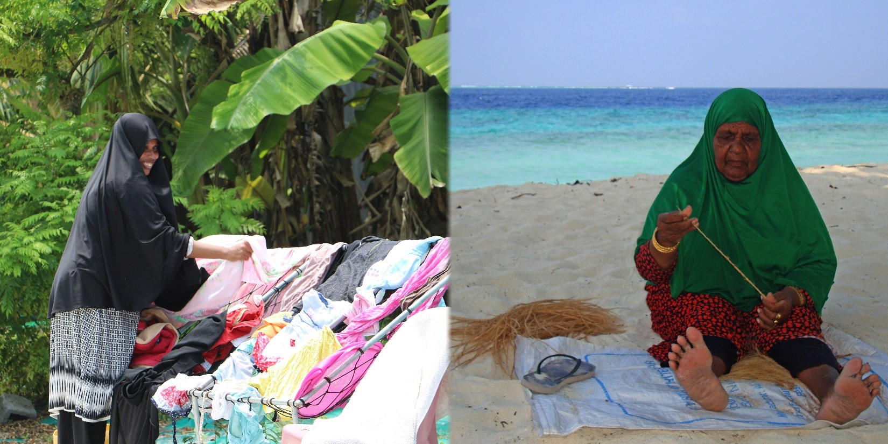
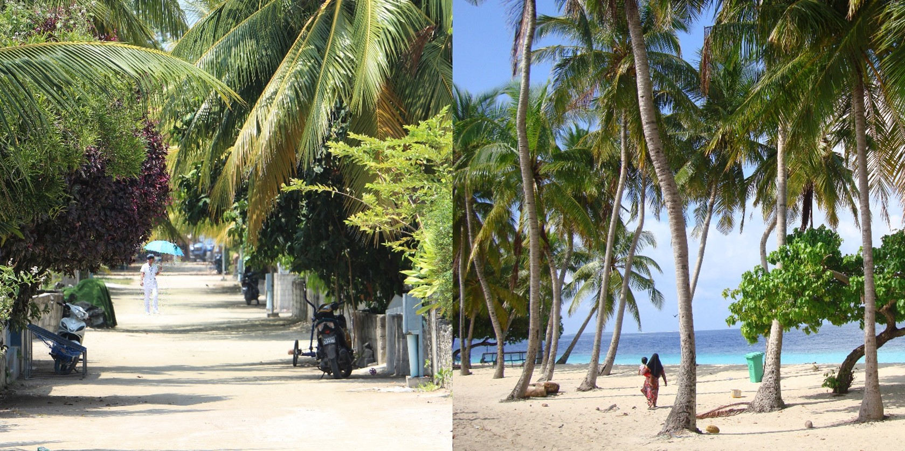
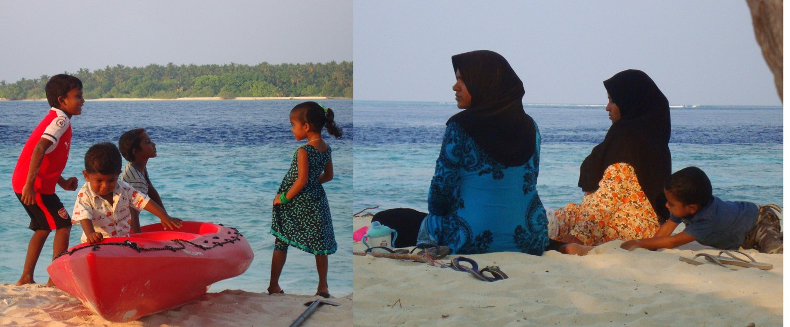
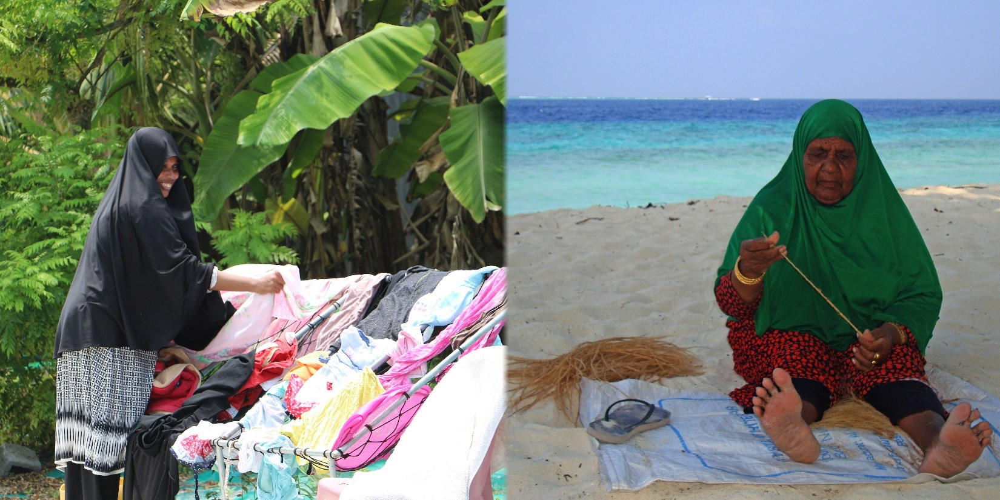
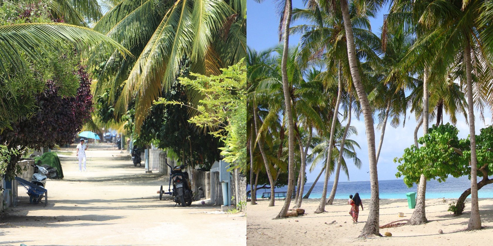
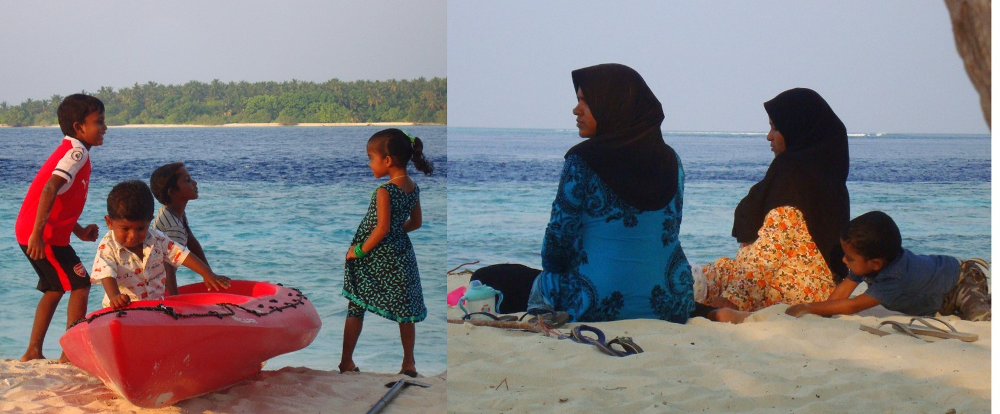
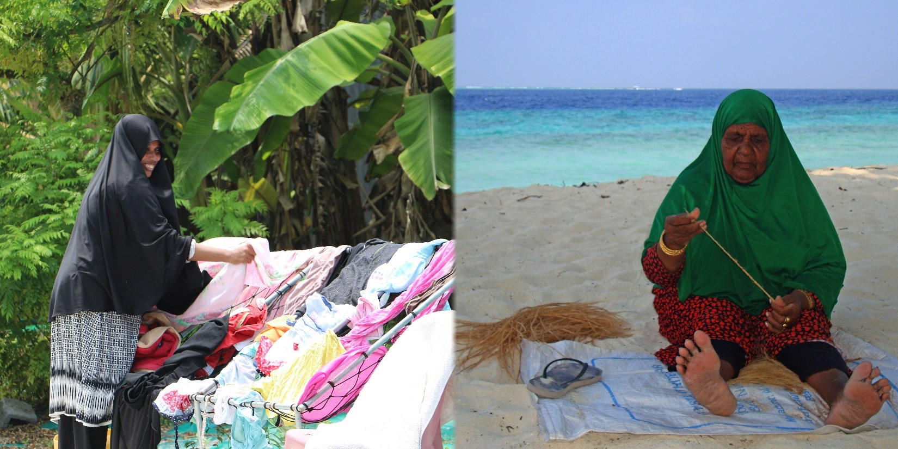
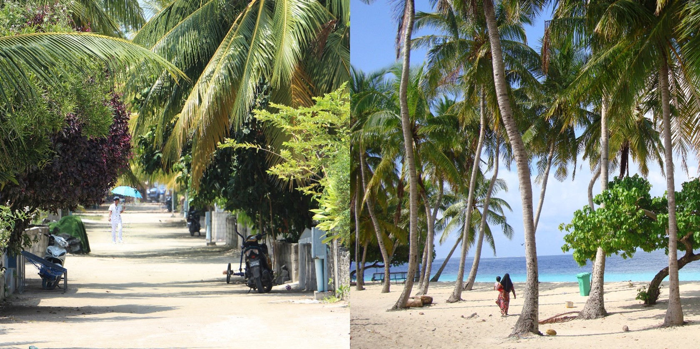
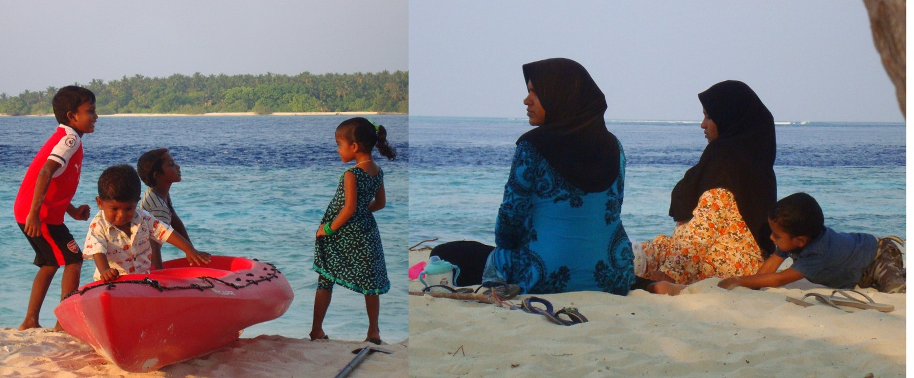

Ono što me fascinira jeste da oni ovde žive kao što su živeli, Bog zna kada. Nešto malo napretka, po koja satelitska antena, ali generalno ih za globalizaciju baš zabole.
Videla sam i prodavnicu gde prodaju pločice za kupatilo i bicikle. Za hranu imaju dve malene radnje na ostrvu. Zvali smo ih supermarketi.
A supermarket me razočarao, jer su imali kozmetiku tipa Fa i slično. Baš sam se razočarala kad sam ih videla u prodavnici. Htela sam da budu potpuno autentični. Mada, sladak im je taj supermarket.
Prodrle su i Cola, Fanta i Sprite za turiste. Oni ne piju gazirano, to je gazda doneo za naš restoran.
U smeštaju smo imali šampon neke poznate marke. Pisalo je da je za crnu i sjajnu kosu. Čak je i sam šampon bio crne boje. Lako je da od njihove kose napravi sjajnu i crnu, kad već takva jeste. Na mojoj, naravno, nije upalilo.
Gazda i pomoćnik imaju mobilne. Nikog drugog nisam videla. Ne mogu se videti nosa zabijenog u telefon. Deca trče. Žene pletu osušeno palmino lišće za krovove onih kućica na vodi u rizortima. Muškarci pecaju i rade u rizortima.
Na ostrvu nemaju ni jednog policajca. Imaju tri učiteljice u školi. Imaju medicinsku sestru.
Muvaju se tamo-vamo. Žene idu sa kišobranima jarkih boja kada je sunce. Većina ide peške, poneko vozi motorić. Celo ostrvo se obiđe za dvadeset minuta.
Sede na plaži i uglavnom ćute. Pomalo pričaju. Nema glasne priče niti smeha grohotom. Uglavnom se kikoću. Nisam čula da viču na decu ili da se svađaju.
Mek, Zara... ni da pomisliš. Verom zabranjeno.
Deca idu i pre i posle podne u školu. Znaju perfektno engleski. Hodža peva pet puta na dan i tada je molitva. Neki neobičan, ali prijatan mir vlada na ostrvu.
Kućice su malene i stare. Vrata su otvorena. Niko ne krade.
Ženama se uglavnom vidi lice, ali nekima vire samo oči. Nose tunike dugih rukava ili debele košulje i duge nogavice, obično tamnih boja. Preko toga je marama oko glave, dugačka. Nekad su im haljine do poda, a nekad virućkaju helanke. Na temperaturi od 27 do 30 stepeni.
Devojčice sve nose helanke i nešto dugačko preko, ali nemaju ništa na glavi. Kosa im je vezana u rep, pa ispletena u pletenicu.
Svi su izuzetno tamnog, gotovo crnog tena. Niski su rastom.
Petar me podseća da smo videli i jato tuna. U plavetnilu, kod odrona. Baš velike i lepe.
Rekla sam Aslamu da sam među najstarijima na ostrvu, a on, da me uteši, reče da ne izgledam uopšte tako staro, nego kao da imam 45. Khm. Toliko i imam. Dobro, dve više.
Pitala sam Aslama kako to da na ostrvu ne vidim stare ljude. Kaže da ih nema. Čudim se, kako ih nema. Kaže, stari uglavnom trebaju medicinsku pomoć i svi su u glavnom gradu, Maleu.
Pitala sam da li i devojčice rone. Da, ali to uglavnom rade dečaci. Još nisam videla decu ni muškarce u vodi.
Žene potpuno obučene, sa onim sunđerastim štapom, za učenje plivanja kao kod nas na bazenu, sam videla potopljene u plićaku.
Pitala sam da li se desilo da se neka Maldivka zaljubila u turistu. Kaže da jesu dve, i otišle su sa ostrva. I on je bio zaljubljen u jednu Maležanku, ali mu roditelji nisu dali da je oženi.
Kada je Duško pitao Aslama da prevede “I like it”, nije znao. Kod njih to ne postoji. Valjda ih niko ne pita da li im se nešto sviđa ili ne.
5. mart 2018 — dan treći.
Petar i Duško su spavali, pa sam ja pošla sama da obiđem ostrvo. Po ulicama sam sretala dečicu kako idu u školu.
Prvo sam srela devojčicu. Potpuno u belom. Vrlo svečano obučena. Bela i marama. Sve snežno belo, uglancano. Vrlo je druželjubiva. Rekla mi je da ide u školu i da joj je to uniforma.
Imaju školu od 6:45, pa pauzu od 9 do 9:30. Onda opet škola do 12, pa pauza za ručak i nastava do 15 sati.
I dečaci nose uniforme. Stariji, bele košulje i tamne pantalone. Mlađi, tirkizno plave majice i tamne pantalone.
Nekako je svečana atmosfera kad tako, u uniformama, idu uličicama prema školi.



Kad Sandra krene u novi kraj sveta, vaš inbox prvi sazna. Prijavite se i stižu vam sve nove priče mejlom.